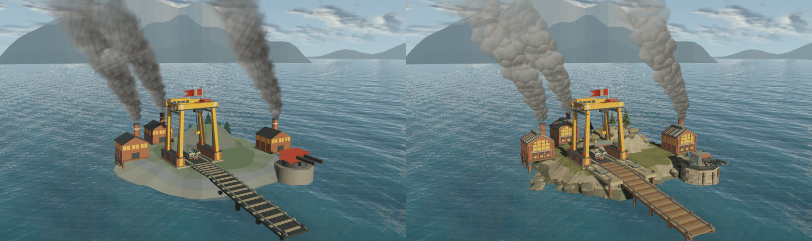
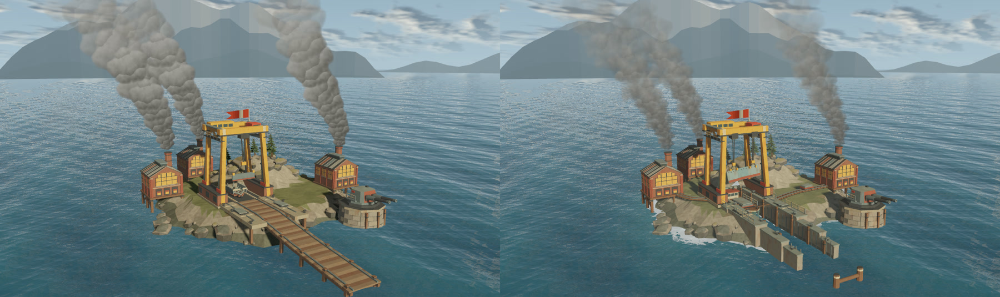
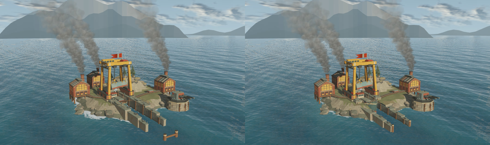

One, two and three chimneys mark the working yards in the Iron Narrows. The flags follow the same wind as the smoke. Each plume goes out when its factory falls.
Tracks carry plate from the furnace halls. A travelling gantry hoists a repair strake over a lighter between the quay walls.
At work
The slings travel with the plate. The lighter rises and falls with the water in the berth.Breakwater holds main-battery fire off the cannery. Her stock beam guns take out the shore gun and the factory. The factory plume disappears.
Visual review
Each comparison uses the same camera, elapsed time and classic Iron Narrows layout. An independent reviewer saw the pairs without revision labels, using the coastal installation and repair berth paintings as references.
First pass · Shoreline and buildings

Previous build at left. First revision at right. The reviewer preferred the new waterfront and shore but could not identify what the foundry crane was lifting.Second pass · A working repair berth

The first revision is at left and the flooded berth is at right. The reviewer identified the suspended plate and the vessel beneath it. The bow was hard to trace and the shoreline foam formed a white ribbon in places.Final pass · Bow, approach and surf

At right, the raised bow shows its cream stripe, the entrance is open, and broken patches of foam pick out the rock ledges. The reviewer chose this version in the final blind comparison.The yard from the bridge